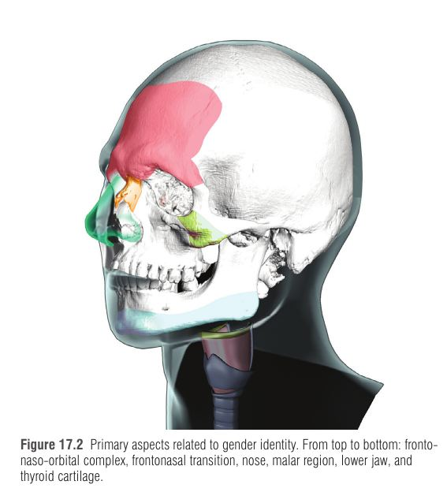
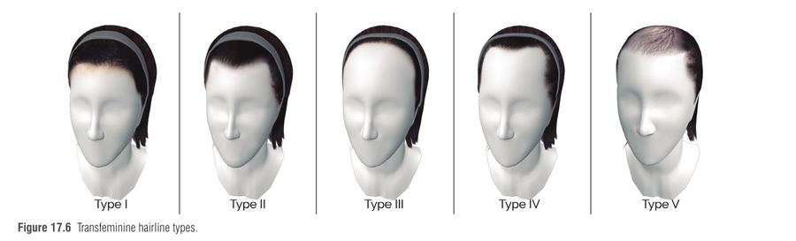
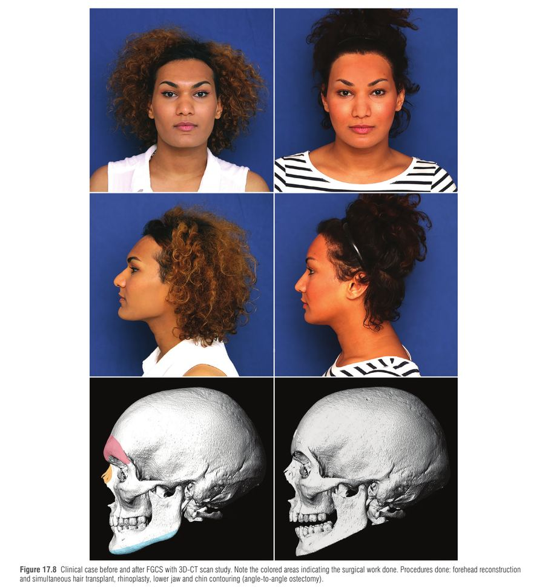
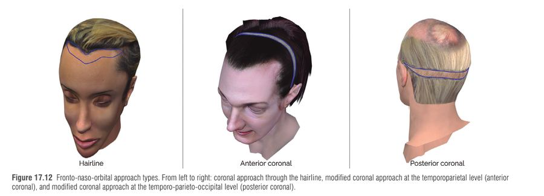
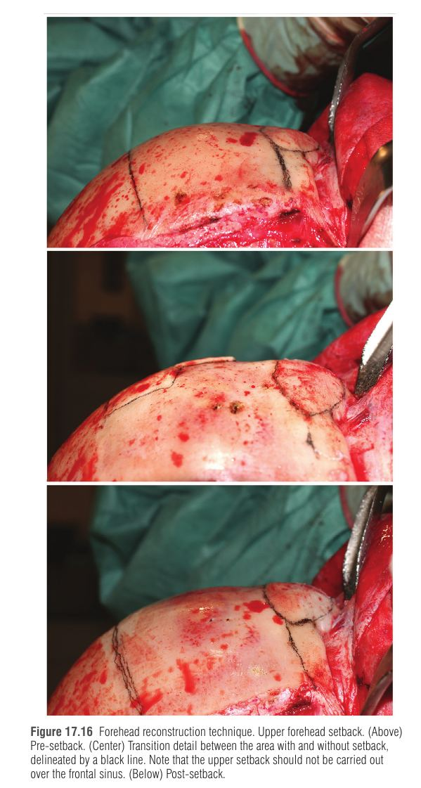
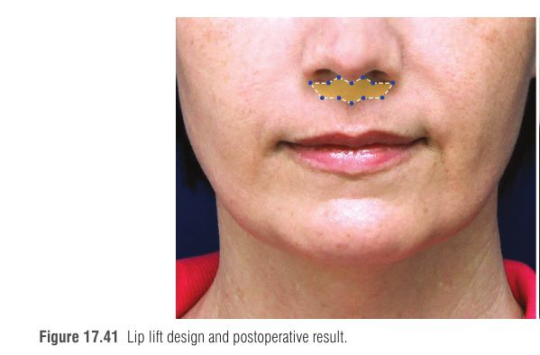
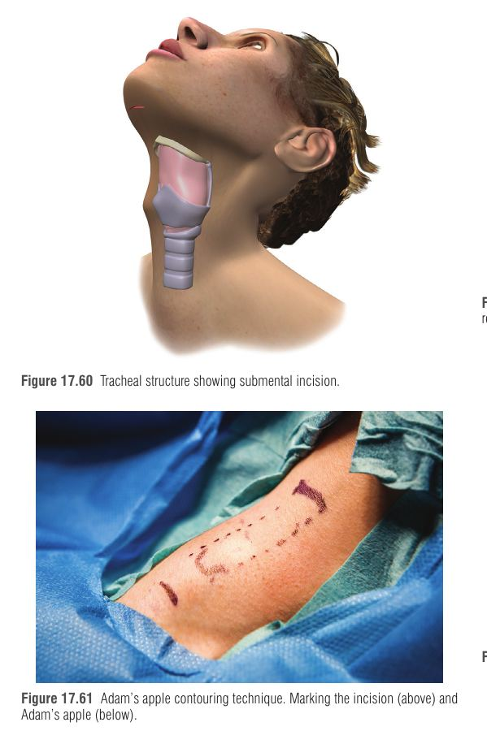

מתוך Plastic Surgery, Neligan – כרך 3: Craniofacial, Head and Neck, Pediatric | פרק 17 בכרך, מאת Capitán, Simon ו-Capitán-Cañadas
ניתוחי פמיניזציה של הפנים (FFS) הם סט פרוצדורות מעולם הכירורגיה הקרניופציאלית, הפלסטית והמקסילופציאלית שמרככות תווי פנים הנתפסים כגבריים. הפרק מציע לקרוא לזה מדויק יותר ניתוח אישור מגדר בפנים (FGCS – Facial Gender-Confirmation Surgery), כי אותן טכניקות מתאימות גם לנשים ציסג'נדריות עם רכס על-אורביטלי בולט במיוחד או לגברים עם לסת רחבה מאוד. הפרק מתמקד בחולות טרנס-נשיות. מאז WPATH SOC 8 (ספטמבר 2022) הניתוח מסווג כהכרח רפואי ולא כקוסמטי.
1 מה הופך פנים לגבריות – "למה" לפני "מה"
טסטוסטרון (טרום-לידתי ובגיל ההתבגרות) ← גדילה של שלד הפנים והסחוסים ← שינוי מבני בלתי הפיך (אי אפשר להפוך אותו בתרופות) ← לכן מתקנים אותו בניתוח.
לעומת זאת, התכונות המשניות (שיער, שיער פנים, מרקם עור, שומן פנים) תלויות הורמונים באופן מתמשך, ולכן מגיבות לטיפול הורמונלי (HT – אסטרוגן ואנטי-אנדרוגן) בתוך 3–12 חודשים.
שרשרת סיבתית: ההבחנה בין מבני (לניתוח) למשני (להורמונים) קובעת את סדר הטיפול.

האזורים העיקריים שקשורים לזהות מגדרית (מלמעלה למטה): מצח וחלל fronto-naso-orbital, המעבר הפרונטו-נזלי, אף, אזור הלחי, הלסת התחתונה וסחוס התירואיד — Neligan 5th ed., Fig. 17.2
2 אנטומיה – מה גברי בכל אזור
אזור
המאפיין הגברי
הערה חשובה
מתחם פרונטו-נאזו-אורביטלי (fronto-naso-orbital)
בליטה פרונטלית (frontal bossing), רכס על-אורביטלי (supraorbital ridge) בולט, רכסים טמפורליים, ניצבים פרונטו-מלריים, מעבר פרונטו-נאזלי חד
הקובע הגדול ביותר של מגדר הפנים. הרכס קובע גם את מיקום הגבות והעפעפיים
אף
גדול יותר (יותר עצם וסחוס), קצה פחות חד, נחיריים רחבים, זווית נזו-לביאלית וזווית פרונטו-נאזלית חדות יותר
גם אתניות וגיל משפיעים כמעט כמו מגדר
לחי (malar)
נפח עצם גדול יותר אצל גברים
לחיים עגולות הן נשיות – אצל נשים הנפח מגיע משומן (אסטרוגן), לא מעצם. משפיע על בחירת הטיפול
לסת תחתונה
גוף מנדיבולה גבוה ורחב, ramus רחב, זווית גוניאלית חדה ולעיתים אוורטית, סנטר מרובע וגבוה
שליש תחתון רחב יותר; גודל תלוי גם בהיאחזות ה-masseter
סחוס תירואיד (Adam's apple)
גדול ובולט יותר (prominentia laryngea)
מקור לסטיגמה אצל נשים טרנסג'נדריות רבות
תכונות משניות: קו שיער בצורת M אצל גברים לעומת קו מעוגל וגבוה יותר במרכז אצל נשים; שיער פנים שמעבה ומחספס את העור; ולנשים יותר שומן פנים מרוכז בשליש האמצעי. ה-HT מייצב התקרחות, מקטין שיער פנים, מרכך עור ומחלק מחדש שומן – ולכן מתחילים בהם לפחות 12 חודשים לפני הניתוח המבני, כדי שהתכנון לא יתבסס על תכונות שעדיין משתנות.
סיווג קו שיער טרנס-פמיניני (5 סוגים) וכלל Lipuhai
גובה קו השיער = המרחק בין ה-glabella ל-trichion. כלל Lipuhai: המרחק בין קו האישונים לקו הקומיסורה של השפתיים מוחל על השליש העליון; אצל גברים הוא חופף בערך לקו השיער, אצל נשים קו השיער מעט נמוך ממנו.
סוג
תיאור
שכיחות
טיפול
I
גובה תקין, מעוגל (אידיאלי)
22%
אין צורך
II
גובה תקין, נסיגה בצדעות (M)
43%
SHT. HLS אסור (לא מתקן נסיגות)
III
גבוה באופן טבעי, מעוגל
4%
HLS (עד 2.5 ס"מ) או SHT (התקדמות עד 1 ס"מ)
IV
גבוה בגלל התקרחות + נסיגה בצדעות
21%
SHT; חלופה: HLS + השתלה נדחית (DHT)
V
קו שיער לא מוגדר, התקרחות מתקדמת
10%
SHT + DHT או ללא טיפול

סוגי קו שיער טרנס-פמיניני (Type I ואילך) – הבסיס לתכנון הנמכת קו השיער — Neligan 5th ed., Fig. 17.6
3 הערכה, אבחון ותכנון
צילום 2D/3D (סטריאופוטוגרמטריה, דיוק <1 מ"מ), CT עם שחזור 3D (קריטי לבדיקת הסינוס הפרונטלי), תכנון וירטואלי + הדפסת 3D (מודלים ומדריכי חיתוך – cutting guides).
Virtual FFS – סימולציה על תמונות לצורך תקשורת וניהול ציפיות; ללא ולידציה מלאה, יש שונות מהתוצאה האמיתית.
עקרון הטבעיות: הניתוח משנה תכונות, לא את זהות הפנים. ליווי פסיכולוג מומחה לאורך כל התהליך.
קריטריונים לבחירת מטופלת: כשירות לניתוח גדול, מוכנות נפשית, ציפיות ריאליות, הבנת הפרוצדורות והחלופות, הסכמה מדעת, ורצוי לפחות שנה של HT והסרת שיער פנים.

מקרה לפני ואחרי ניתוח אישור מגדר בפנים (FGCS) עם 3D-CT: שחזור מצח, השתלת שיער, ריינופלסטיקה וקונטורינג של הלסת והסנטר — Neligan 5th ed., Fig. 17.8
4 השליש העליון – שיחזור מצח וקו שיער
שיחזור מצח (Forehead Reconstruction, FR) הוא אחת הפרוצדורות הבסיסיות. מטרות: לפתוח את הזווית הפרונטו-נאזלית, להזיז לאחור את כל המצח כולל הדופן הקדמית של הסינוס הפרונטלי בצורה עגולה, לפתוח את ארובות העיניים, לרכך את המשטח, ולהחזיר את הגבות מעל הרכס החדש.

שלוש גישות: קורונלית דרך קו השיער, קורונלית מותאמת ברמה הטמפורו-פריאטלית, וקורונלית אחורית — Neligan 5th ed., Fig. 17.12
טכניקת FR – שלבים
גישה: coronal מותאם (קדמי/אחורי) או דרך קו השיער. חתך אלכסוני בזווית 35–45° משמר זקיקים, כך ששיער צומח דרך הצלקת. החתך מאפשר הסרת אליפסת קרקפת עודפת.
דיסקציה: שמירה על ענף פרונטלי של עצב VII; פלאפ פריקרניאלי רחב; זיהוי ושחרור עצבי supraorbital (לעיתים דרוש osteotomy של השפה העצמית).
Setback של המצח העליון בשיוף עצם (לא מעל הסינוס).
Osteotomy של הדופן הקדמית של הסינוס – שמירה על רירית הסינוס ופתיחות ה-frontonasal ducts; מניעת נקב בדופן האחורית.
עיצוב מחדש של הרכס והמעבר הפרונטו-נאזלי.
קיבוע בטיטניום 1.2 (ברגים/לוחיות; רשת טיטניום אם יש נקב או חולשה).
פתיחת ארובות בקדח קטן.
סגירה בשכבות + נקז (Redon) ל-24–48 שעות.
לפני האוסטאוטומיה בודקים ב-CT: עובי הדופן הקדמית, נפח הסינוס, התפשטות לצדדים ולתקרת הארובה, והקרנה. אלה קובעים אם השיחזור פשוט (ברגים ולוחיות) או מורכב (ברגים + רשת). יש חולות ללא סינוס (אגנזיס) – גם הן מטופלות באותה גישה.

הסטה אחורה של המצח העליון (upper setback): לפני, בשלב הביניים (עם סימון הקו) ואחרי — Neligan 5th ed., Fig. 17.16
קו שיער: השתלה, הנמכה והשתלה סימולטנית
שיטה
מהות
הערות
FUE
הוצאת זקיקים בודדים
פחות פולשנית, ארוכה וקשה טכנית
FUSS
זקיקים מרצועת קרקפת
מתאימה כשיש רצועה זמינה
HLS (Hairline Lowering)
הסרת עד 2.5 ס"מ עור והנמכת המצח; גם כגישה ל-FR
חסרונות: צלקת גלויה, מצח קצר מדי במרכז, מתח בצדעות. רק ~1% מהמטופלות מועמדות בפרקטיקת המחברים (אך נפוצה בעולם)
SHT (Simultaneous Hair Transplant)
שימוש ברצועת הקרקפת מגישת ה-coronal כמקור זקיקים באותו ניתוח (~1500 FU, ~2700 שערות)
הישרדות זקיקים >90%. דורש התקרחות מיוצבת. נעשית כשהמטופלת ערה אחרי ההרדמה
גישה קדמית: Norwood I–III, צפיפות >60 FU/cm², ללא miniaturization.
גישה אחורית: Norwood III–IV, צפיפות <50 FU/cm² בטמפורו-פריאטלי, או miniaturization.
עקרון השתלה: זקיקים של שערה אחת בשורות הקדמיות (2–3 שורות), אחר כך 2 שערות, ו-3–4 שערות מאחור; כיוון חריצים 15–20° בקו הקדמי, 30–45° באמצע, 5–10° בצדעות; צפיפות 40–50 FU/cm².
הכנה: ללא NSAIDs/אספירין 7 ימים, ללא מינוקסידיל 14 ימים, ללא אלכוהול 3 ימים, ללא עישון 24 שעות. אחרי: אזיתרומיצין 500 מ"ג ל-3 ימים, ספריי מלח כל שעתיים בשבוע הראשון.
5 השליש האמצעי והתחתון, והצוואר
אף – ריינופלסטיקה פמינינית
שלוש מטרות: פמיניזציה, הרמוניה עם המצח והלסת שעברו שינוי, ותוצאה אסתטית מעבר למגדר. בדרך כלל גישה פתוחה (transcolumellar), הרדמה כללית, כשעתיים.
מטרה
טכניקה
עידון הקצה
הסרת רצועה מהשוליים הצפלים של הסחוסים הלטרליים התחתונים תוך השארת לפחות 8 מ"מ בשוליים הקאודליים; תפרי intradomal/interdomal; שתלים (caudal extension, tongue-in-groove, shield)
קיצור האף
הסרת חלק קאודלי של הספטום עם רירית; columellar strut; tongue-in-groove לקיצור וסיבוב
הצרת הגשר ופרופיל
שברי עצם ו-approximation; פיזיוכירורגיה אולטרסונית לאוסטאוטומיות מדויקות עם פחות בצקת וחבורות. הסרת דורסום: composite reduction או dorsal preservation (push-down/let-down)
טכניקות רדוקטיביות בלבד – לשימוש נדיר, כי אינן מבטיחות תמיכה ויציבות (סיכון לאסימטריה, סטייה, קריסת קצה).
מעבר פרונטו-נאזלי: אצל גברים הזווית חדה. מעלה את הזווית (Bellinga: מ-133.6° ל-149.1°, p<0.001). נעשה בו-זמנית עם FR; ללא פקקים קדמיים או עם Merocel קטן עד 24 שעות.
הרמת שפה עליונה (Lip Lift) ולחיים
Lip lift (שינוי של bullhorn): מקצרת עודף אנכי של השפה העליונה, חושפת חלקית את החותכות המרכזיות במנוחה והופכת פרופיל שטוח למעוגל. מסירים רצועת עור בלי לפגוע ב-orbicularis oris; התפר המרכזי תופס את בסיס הקולומלה ואת ה-SMAS באמצע ה-Cupid's bow. אפשר להוסיף שומן (0.4–0.5 סמ"ק).
הגדלת לחיים: שתל קשיח מקובע בברגים (גישה תוך-פומית, יציב אך עלול להיראות מלאכותי אם הנפח לא מחושב), או השתלת שומן (עד 50–65% נספג, לעיתים דרושים כמה מפגשים, ובנוסף משפר את איכות העור).

תכנון הרמת שפה עליונה (lip lift) ותוצאה לאחר הניתוח — Neligan 5th ed., Fig. 17.41
לסת תחתונה וסנטר (Lower Jaw Contouring)
מטרות: הקטנת הממד האנכי/רוחבי, ריכוך הזוויות הגוניאליות, עיצוב קו הלסת ושינוי נפח, צורה ומיקום של הסנטר. לא נועד לטפל באוקלוזיה. הכלים: קדחים מהירים ואולטרסאונד (במיוחד באזורים קשי גישה, חיתוכים בעקמומיות, ובעיקר ליד רקמות רגישות).
תכנון מדריך חיתוך: CT (DICOM) ← תוכנת 3D ← מישור אוסטקטומיה במרחק לפחות 5 מ"מ מהעצב המנטלי ← הדפסת מדריך שקוף תואם-ביולוגית (מודפס גם עותק רזרבי; חיטוי ב-chlorhexidine 0.12%).
גישות (תמיד תוך-פומיות): סנטר – חתך וסטיבולרי רחוק מהחניכיים בין עוקצים; גוף וזווית – חתך דו-צדדי ברמת טוחנות 1–3. גישה משולשת (triple approach) עם "גשרי רירית" מגנים על העצבים המנטליים ובכך נמנעת הסרת ה"כפפה" (mandibular degloving).
אוסטקטומיות: זווית – חיתוך מלא בשתי הקורטיקליות (בוקלית ולינגואלית) ובאזור הטריקורטיקלי של ה-ramus האחורי למניעת bad split; angle-to-angle – סימטריה ושבירה לארבעה חלקים; סנטר – tapering, קיצור אנכי, sliding genioplasty להקדמה, או שתל עצם להארכה.
שיוף (shaving) והחלקת מעברים למניעת צעדים נמוכים.
סגירה והחזרה: יישור שריר ה-mentalis (מניעת "hanging chin"), עיגון mylohyoid אחרי קיצור משמעותי של הגבול התחתון, סגירה בשכבות.
אחרי קונטורינג נרחב עלולה להופיע או להחמיר צניחת רקמות רכות (jowls). בחולות מעל גיל 45 עם הסרה >5 מ"מ מהגבול – מיידעים על אפשרות להרמת פנים וצוואר 9–12 חודשים אחר כך. חלופות פחות פולשניות: HIFU, רדיו-תדר.
צמצום גובה אנכי של הסנטר בעזרת אולטרסאונד/פיזיוסורגריה — Neligan 5th ed., Fig. 17.58
קונטורינג תפוח אדם (Adam's Apple / Tracheal Shave)
חתך קטן (≤2 ס"מ) מתחת לסנטר (submental), רחוק מהסחוס – מונע צלקת ודבקות.
מזהים את הנקודה הבולטת ביותר; מקטינים בקדח יהלום או בסכין קרה. משנים רק את החלק הבולט כדי לשמור על שלמות המבנה.
פיזור קו אמצעי ושמירה על שרירי ה-infrahyoid; סגירה ישירה של העור.
סיכון קריטי: פגיעה בהיאחזות הקדמית של מיתרי הקול (שינוי קול) – מכאן הגבלת הדיסקציה לאזורים בטוחים.

מבנה הקנה וחתך תת-סנטרי (17.60) וסימון החתך לניתוח תפוח האדם (17.61) — Neligan 5th ed., Fig. 17.60, 17.61
6 תזמון, סדר ניתוחים והחלמה
נושא
המלצה
המתנה בין ניתוחים
לפחות 6 חודשים בין סט פרוצדורות פנים לניתוח אחר (בהיעדר סיבוכים)
ניתוח קול
אם חיצוני (cricothyroid approximation) – אפשר יחד עם תפוח אדם. אם אנדוסקופי – תפוח אדם לפני. אינטובציה קשה אחרי ניתוח מיתרים טרי
הסרת שיער
להפסיק לפחות שבועיים לפני ניתוח לסת; לחדש לא לפני 6 שבועות אחרי
סדר מומלץ
עולה: תפוח אדם ← לסת וסנטר ← שיחזור מצח ← ריינופלסטיקה ופרוצדורות "קטנות" (lip lift, blepharoplasty). שומן – לפי שיקול
החלמה
שלב דלקתי 4–6 חודשים (מוקדם 3–4 שבועות, מאוחר 2–6 חודשים); שלב re-adaptation 12–15 חודשים (אף עד 18–24 חודשים)
בצקת
קירור מבוקר (Hilotherm) 24–48 שעות, ניקוז לימפתי ידני אחרי 2–5 ימים, חבישת לחץ 2–3 שבועות אחרי לסת
7 סיבוכים – טבלה מסכמת
פרוצדורה
סיבוך
מנגנון / מתי
טיפול
Coronal
המטומה
דימום מכלי קרקפת/subgaleal, מיידי; עלול להגיע לארובה
ניקוז, שליטה בדימום, ניטור. מניעה: נקז + לחץ
פריצת תפרים / התקרחות
מתח; stress hormonal (טלוגן)
טיפול בפצע, תיקון צלקת, ויטמינים או השתלה
שיחזור מצח
נקב בדופן האחורית
תוך-ניתוחי; סיכון לדליפת CSF, דלקת קרום המוח
איטום במהלך הניתוח
תפקוד סינוס לקוי
חסימת frontonasal duct, אחרי 6 חודשים: כאב, mucocele, זיהום
דברידמן אנדוסקופי ופתיחת הדוקט, עד obliteration
ספיגת דופן קדמית
עיצוב/קיבוע לקוי או נקב שלא שוחזר; מאוחר
ניתוח משחזר (למשל שתל גולגולת)
HLS
צלקת גלויה
מתח, סוג שיער
צלקת/השתלה
לסת וסנטר
דימום/המטומה בקרקעית הפה
חירום, סיכון לדרכי אוויר
ניקוז כירורגי מיידי + המוסטזיס
זיהום
לעיתים דנטלי
אנטיביוטיקה או ניתוח
שבר
אזורים מוחלשים (סימפיזיס, זווית); bad split
רדוקציה וקיבוע; שחזור אוקלוזיה
תפוח אדם
נזק למיתר קול
היאחזות קדמית
הפניה ל-ENT
פגיעה בדרכי אוויר
קדיחה יתר או פגיעה בקרום cricothyroid
-
צלקת גרועה
חתך מעל הסחוס
תיקון צלקת
8 טכניקות זכירה
ראשי תיבות: F-L-A-N-C – האזורים המגדריים
F – Forehead (מצח + סינוס): הקובע הגדול ביותר. L – Lower jaw (לסת וסנטר). A – Adam's apple (סחוס תירואיד). N – Nose (אף). C – Cheeks (לחיים, שומן/שתל). (ראשי תיבות מקורי לשימוש לימודי, לא מונח מהספר.)
סדר ניתוח "מלמטה למעלה":Adam's ← Jaw ← Forehead ← Nose ("אדם גולש לפח נקי": A-J-F-N).
סיפור דמיוני
דמייני בונה שמשפץ בית בן שלוש קומות עם מגדל קטן על הגג. את היסודות (העצם) אי אפשר לשנות בלי פטיש חשמלי, ולכן קודם מתחילים במרתף (תפוח אדם), עולים לקומה התחתונה (לסת), לקומה העליונה (מצח) – ורק בסוף צובעים את החזית (אף ושפה) כשהקירות כבר יציבים. את הצבע והווילונות (שיער ועור) מחליפים בנפרד, שנה לפני כן, בעזרת "הורמונים".
9 מקורות נוספים
WPATH Standards of Care, Version 8 (Coleman E. et al., Int J Transgend Health 2022;23(S1):S1-S259)
ההנחיות הבינלאומיות; מסווגות ניתוח אישור מגדר בפנים כהכרח רפואי.
Capitán L. et al., Plast Reconstr Surg 2017;140(5):766e – "Facial gender confirmation surgery: a new nomenclature"
מקור המינוח FGCS בפרק.
Coon D. et al., Plast Reconstr Surg 2022;149(1):212 – International Facial Gender Symposium consensus
סקירה מבוססת-ראיות וקונסנזוס על כירורגיה של מגדר בפנים.
10 מקרה קליני ותרגול
וינייטה
מטופלת בת 34, אישה טרנסג'נדרית, בטיפול הורמונלי כבר שנתיים והסרת שיער פנים בלייזר שהושלמה. מתלוננת על "מצח גברי", אף גדול וסנטר מרובע. קו השיער שלה בצורת M עם נסיגה בצדעות, בגובה תקין, ללא התקרחות פעילה, וצפיפות 70 FU/cm² ללא miniaturization. ב-CT: סינוס פרונטלי גדול עם דופן קדמית דקה ומשתרע לתקרת הארובה. התכנון כולל שיחזור מצח, ריינופלסטיקה, הקטנת סנטר ותפוח אדם.
1. מהי הגישה המתאימה ביותר לקו השיער במטופלת בוינייטה?
סוג II (גובה תקין, M, התקרחות יציבה): הטיפול הוא SHT. HLS אינו מתקן נסיגות בצדעות (תשובה 0 שגויה). HT מייצב התקרחות אבל לא סוגר נסיגה (1). הגישה האחורית שמורה ל-Norwood III–IV, צפיפות <50 FU/cm² או miniaturization – לא המקרה כאן (3).
2. למה תכונות כמו שיער פנים ושומן לחיים מטופלות בהורמונים לפני הניתוח, ואילו הרכס העל-אורביטלי טופל בניתוח?
התכונות המבניות נקבעות בשלב ההתבגרות וקבועות; המשניות מגיבות ל-HT בתוך 3–12 חודשים. (0) שגוי – HT לא משנה עצם. (2) שגוי – יש ירידה בשיער פנים, אך לא תמיד מספקת ולכן מוסיפים הסרה. (3) לא מדויק.
3. בניתוח שיחזור מצח, איזה סיבוך יכול להופיע מעל 6 חודשים אחרי הניתוח עם תסמינים כמו לחץ סינוס, ריר מוגבר או mucocele?
פגיעה בצינור הניקוז של הסינוס גורמת להצטברות ריר (mucocele) וזיהום. (0) ו-(2) הם סיבוכים תוך-ניתוחיים או מיידיים; (1) מיידי בסמוך לניתוח.
4. מה המרחק המינימלי שנשמר בין מישור האוסטקטומיה בלסת התחתונה לעצב המנטלי, ולמה משתמשים בגישה תוך-פומית משולשת?
הפרק קובע בטיחות של לפחות 5 מ"מ מהעצב המנטלי. הגישה המשולשת מאפשרת עבודה על סנטר, גוף וזווית תוך שמירה על גשרי רירית מעל העצבים ובלי הגישה המורחבת (degloving). אולטרסאונד לא מבטל את הצורך בזהירות (3).
5. מטופלת בת 52 עברה קונטורינג נרחב של הלסת (הסרת >5 מ"מ מהגבול). איזו תוצאה צפויה ומה ההמלצה?
הרקמות הרכות צריכות 9–12 חודשים להסתגל לעצם החדשה; בחולות >45 עם הסרה גדולה יש סיכון לצניחה ומיידעים על אפשרות להרמת פנים. (1) ו-(3) הם סיבוכים תוך-ניתוחיים/מיידיים, לא בתיאור.
11 סיכום של הסיכום
FGCS = ניתוח אישור מגדר בפנים; מאז WPATH SOC 8 (2022) – הכרח רפואי.
תכונות מבניות (מצח, אף, לחי, לסת, תירואיד) – ניתוח. תכונות משניות (שיער, עור, שומן) – HT והסרת שיער, לפחות שנה לפני.
מצח = הקובע הגדול ביותר של מגדר; שיחזור מצח (osteotomy של הדופן הקדמית של הסינוס, קיבוע טיטניום, גבות מעל הרכס), בדיקת CT חובה.
קו שיער: 5 סוגים; SHT (>90% הישרדות) לסוגים II, IV, V; HLS לסוג III בלבד (עד 2.5 ס"מ).
אף: גישה פתוחה, שתלים אוטולוגיים, פיזיו אולטרסונית; לא רק רדוקציה.
לסת וסנטר: מדריכי חיתוך, 5 מ"מ מהעצב המנטלי, גישה תוך-פומית משולשת; סיכון jowls ו-"hanging chin".
תפוח אדם: חתך submental ≤2 ס"מ, לגעת רק בחלק הבולט; סכנה למיתרי קול.
סדר: תפוח אדם ← לסת ← מצח ← אף. החלמה סופית 12–24 חודשים.